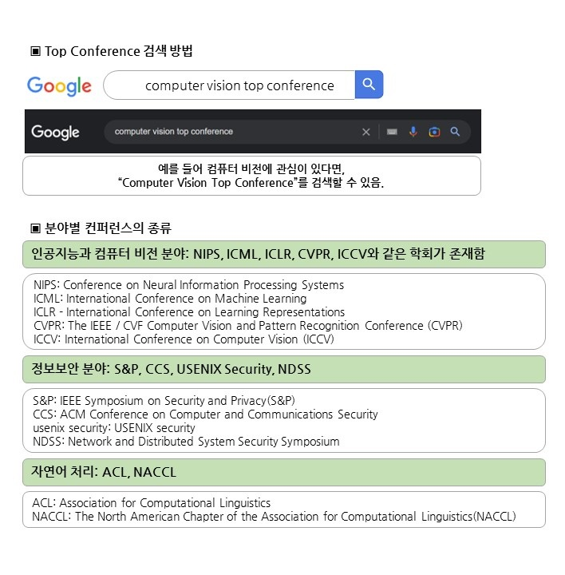
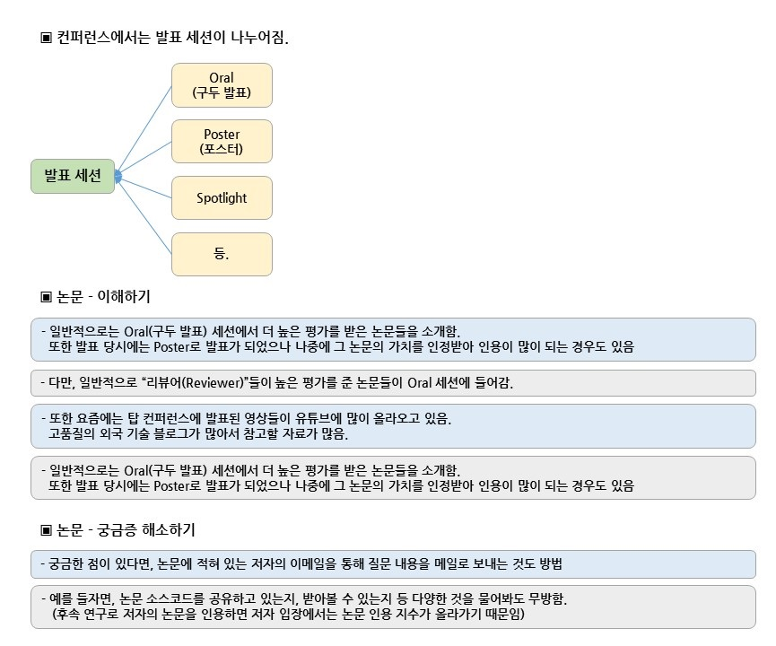

Favorite / Computer Engineering
컴퓨터공학 관련 즐겨찾기입니다.
YouTube 컴퓨터공학 분야의 영향력자(Influencer) 나동빈님 자료를 참고했습니다.
참고한 이유로는 컴공 분야의 인터넷 강의로도 유명하며, 대학원 생활을 경험하셨기 때문입니다.
| 번호 | 주제명 | 링크 | 비고 |
|---|---|---|---|
| 1 | arXiv.org(코넬대) | 링크(Link) |
- arXiv(아카이브)는 수학, 물리학, 천문학, 전산 과학, 계량 생물학, 통계학 분야의 출판 전(preprint) 논문을 수집하는 웹사이트이다. |


| 번호 | 분류 | 주제명 | 링크 | 비고 |
|---|---|---|---|---|
| 1 | 인공지능 |
AAAI - AAAI Conference on Artificial Intelligence |
링크(Link) |
- 전미인공지능학회는 미국 내 인공지능을 연구하는 학회다. - 트리플A라 부르기도 한다. - 이 학회는 잡지 《AI Magazine》을 발행하며, 전국대회를 개최하는 일을 진행한다. |
| 2 | 인공지능 | NIPS - Conference on Neural Information Processing Systems |
링크(Link)
NeurIPS | 2023 - 링크(Link) |
- 신경 정보 처리 시스템에 관한 컨퍼런스 및 워크샵은 매년 12월에 열리는 머신러닝 및 계산 신경 과학 컨퍼런스이다. |
| 3 | 인공지능 | ICML - International Conference on Machine Learning | 링크(Link) |
- 머신러닝에 관한 국제 회의는 머신러닝 분야의 선도적인 국제 학술 회의(컨퍼런스)입니다. - NeurIPS 및 ICLR과 함께 머신러닝 및 인공 지능 연구에서 영향력이 큰 3대 주요 컨퍼런스 중 하나입니다. 국제 머신러닝 학회에서 지원합니다. |
| 4 | 인공지능 | ICLR - International Conference on Learning Representations | 링크(Link) |
- International Conference on Learning Representations는 일반적으로 매년 4월 말 또는 5월 초에 열리는 Machine Learning 컨퍼런스이다. - 컨퍼런스에는 초청 강연과 추천 논문의 구두 및 포스터 발표가 포함된다. |
| 5 | 컴퓨터비전 | CVPR: The IEEE / CVF Computer Vision and Pattern Recognition Conference (CVPR) |
CVPR 2023 - 링크(Link)
CVPR 2022 - 링크(Link) CVF Open Access - 링크(Link) |
- 컴퓨터 비전 및 패턴 인식 컨퍼런스는 IEEE에서 주최하는 컴퓨터 비전과 패턴 인식 분야 학술회의이다. |
| 6 | 컴퓨터비전 | International Conference on Computer Vision (ICCV) - IEEE |
IEEE ICCV - 링크(Link)
ICCV - 2023 (Paris) - 링크(Link) ICCV - 2021 - 링크(Link) |
- 국제 컴퓨터 비전 학회는 격년제로 개최되는 학회로서 컴퓨터과학 분야 최고 수준의 학회중 하나이며 컴퓨터시신경 및 인공지능-패턴인식 분야에 있어 CVPR과 함께 최고권위의 학회이다. |
| 7 | 보안 | IEEE Symposium on Security and Privacy(S&P) |
IEEE ICCV - 링크(Link)
IEEE S&P 2023 - 링크(Link) IEEE S&P 2022 - 링크(Link) |
- IEEE Security & Privacy는 IEEE Computer Society와 IEEE Reliability Society가 공동으로 발행하는 상호 심사 과학 저널이다. 컴퓨터 기반 시스템의 보안, 개인 정보 보호 및 신뢰성을 다룬다. |
| 8 | 보안 | CCS - ACM Conference on Computer and Communications Security |
ACM CCS 2023 - 링크(Link)
ACM CCS 2022 - 링크(Link) Digital Library / ACM CCS - 링크(Link) |
- |
| 9 | 보안 | USENIX security |
USENIX Conferences - 링크(Link)
USENIX Security '23 - 링크(Link) USENIX Security '22 - 링크(Link) |
- USENIX Security는 연구원, 실무자, 시스템 관리자, 시스템 프로그래머 등을 모아 컴퓨터 시스템과 네트워크의 보안 및 개인 정보 보호에 관한 최신 기술을 공유하고 탐구한다. |
| 10 | 보안 | NDSS - Network and Distributed System Security Symposium |
NDSS Symposium - 링크(Link)
NDSS '23 - 링크(Link) NDSS '22 - 링크(Link) |
- 네트워크 및 분산 시스템 보안(NDSS) 심포지엄은 네트워크 및 분산 시스템 보안의 연구원과 실무자 간의 정보 교환을 촉진한다. |
| 11 | 아키텍처 | Micro - IEEE/ACM International Symposium on Microarchitecture |
IEEE Micro - 링크(Link)
Micro - Symposium - 링크(Link) |
- IEEE Micro는 IEEE Computer Society에서 발행하는 상호 심사 과학 저널로서 집적 회로 프로세스 및 사례, 프로젝트 관리, 개발 도구 및 인프라, 칩 설계 및 아키텍처, 소규모 시스템의 경험적 평가를 포함한 소규모 시스템 및 반도체 칩을 다루고 있다. |
| 12 | 아키텍처 | IEEE International Symposium on High-Performance Computer Architecture(HPCA) |
HPCA Conf - 링크(Link)
HPCA Conf 2023 - 링크(Link) HPCA Conf 2022 - 링크(Link) |
- 고성능 컴퓨터 아키텍처에 관한 국제 심포지엄은 과학자와 엔지니어가 빠르게 변화하는 이 분야에서 최신 연구 결과를 발표할 수 있는 고품질 포럼을 제공한다. |
| 13 | 자연어처리 | Association for Computational Linguistics(ACL) |
ACL Member Portal - 링크(Link)
ACL 2023 - 링크(Link) ACL 2022 - 링크(Link) |
(한글) - The Association for Computational Linguistics(ACL)는 자연어 처리에 종사하는 사람들을 위한 과학적이고 전문적인 조직입니다. - 그 이름을 딴 컨퍼런스는 EMNLP와 함께 자연어 처리 연구를 위한 주요 영향력 있는 회의 중 하나이다. - 이 컨퍼런스는 중요한 전산 언어학 연구가 수행되는 장소에서 매년 여름에 개최된다. (English) - The Association for Computational Linguistics (ACL) is a scientific and professional organization for people working on natural language processing. - Its namesake conference is one of the primary high impact conferences for natural language processing research, along with EMNLP. - The conference is held each summer in locations where significant computational linguistics research is carried out. |
| 14 | 자연어처리 |
The North American Chapter of the Association for Computational Linguistics(NACCL) |
NAACL - 링크(Link)
NAACL 2022 - 링크(Link) |
- 전산 언어학 협회(NAACL)의 북미 지부는 북미뿐만 아니라 중남미의 전산 언어학 협회(ACL) 회원에게 지역적 초점을 제공하고, 연례 회의를 조직하고, 관련 과학 및 전문 학회, 아메리카에 있는 사람 및 기관의 ACL 회원 자격을 장려 및 촉진하고 ACL 집행 위원회를 위한 지역 활동에 대한 정보 소스를 제공한다. |
| 15 | 컴퓨터협회 | USENIX | The Advanced Computing Systems Association | USENIX - 링크(Link) |
- USENIX 협회는 고급 컴퓨팅 시스템스 협회이다. 1975년 유닉스 유저스 그룹이라는 이름으로 설립되었으며 유닉스 및 유사 시스템의 연구 및 개발을 주 목표로 하고 있다. |
| 16 | 정보센터 | 전자정보연구정보센터 | 링크(Link) |
- EIRIC(Electronic & Information Research Information Center)은 컴퓨터, 소프트웨어, 전자, 통신 및 AI 관련 연구자들을 위한 국가 지정 연구정보 포털사이트이다. |
| 번호 | 주제명 | 링크 | 비고 |
|---|---|---|---|
| 1 | 한국소프트웨어산업협회 | 링크(Link) | - |
| 2 | SW기술자경력관리시스템 - 한국소프트웨어산업협회 | 링크(Link) | - KOSA 소프트웨어기술자 경력증명서 신고업무 |
| 번호 | 주제명 | 링크 | 비고 |
|---|---|---|---|
| 1 | KISA - 한국인터넷진흥원 | 링크(Link) | - |
| 2 | KISA - 인터넷 보호나라 & KrCert | 링크(Link) | - |
| 3 | KCA - 한국방송통신전파진흥원 | 링크(Link) | - 방송, 정보보안기사, 통신 등의 업무 수행 |
| 번호 | 주제명 | 링크 | 비고 |
|---|---|---|---|
| 1 | (사)스마트미디어학회 |
링크-Jams(Link)
링크-학회 홈페이지 |
- |
| 2 | 한국통신학회 |
링크-제4회 한국 인공지능 학술대회(Link)
링크-학회 홈페이지 |
- |
| 3 | 조선대학교 IT연구소 | 링크(Link) | - |